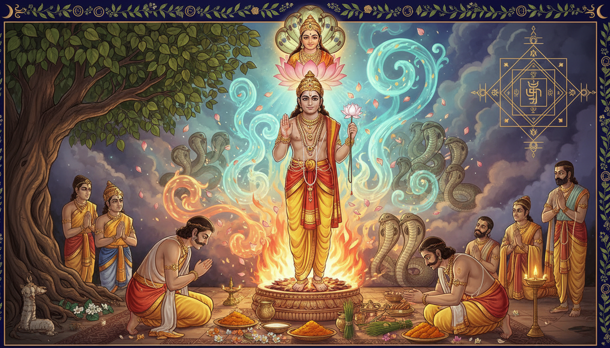

Some wounds do not ask for a single remedy. They ask for a complete halt to a ritual of revenge. The story of Sage Astika is about that halt: a boy-sage who walked into a fire sacrifice designed to destroy every serpent and asked for the one boon that could save an entire lineage. He did not deny the bite. He denied the idea that one bite must become an eternal war.

If you have ever felt trapped in repetitive anger, inherited family conflict, obsessive fear, unexplained spiritual dread, or a mind that keeps returning to the same painful coil, Astika’s story is a map. It combines remedial astrology, Ayurvedic cooling, philosophy, Manasa Devi worship, Naga rituals, and carefully bounded occult protection. It is not a substitute for medical care, mental-health treatment, legal advice, or practical action. It is the inner discipline that helps those tools work without being burned by hatred.
1. The Story: The Boy Who Stopped The Great Serpent Sacrifice
In the Mahabharata, King Parikshit dies after the serpent Takshaka bites him. His son Janamejaya learns the truth and performs the Sarpa Satra, a fire ritual powerful enough to summon every serpent to destruction. The sacrifice grows terrifying. Even Takshaka, the serpent who caused the original wound, is dragged toward the flames.
At that moment, Sage Astika enters. He is not a warrior. He is a child of two worlds: his father is the Brahmin sage Jaratkaru, and his mother is Manasa, the serpent goddess. This means Astika carries both the clarity of human discipline and the instinctual memory of the serpent world. He does not pretend that Takshaka is innocent. He simply sees that a ritual of total revenge has become a greater poison than the first bite.
Astika praises Janamejaya, the priests, and the sacrifice. When the king offers him a boon, Astika asks only this: stop the sacrifice. Janamejaya resists, but Astika’s request is so truthful, so timely, and so free of hatred that the king cannot refuse. The fire is stopped. Takshaka is saved. The serpent lineage continues.
The miracle is not that Astika won an argument. The miracle is that he knew when truth must become a boundary.
2. Why This Story Speaks To Modern Obsession
| Modern struggle | How it resembles the Sarpa Satra | What Astika teaches |
|---|---|---|
| Inherited family anger | One wound becomes a ritual blame pattern | Name the bite, not the whole family |
| Obsessive thought loops | The mind keeps feeding the same fire | Withdraw one piece of fuel at a time |
| Betrayal at work | You want to burn a system, not just solve one issue | Use documentation, timing, and truth |
| Spiritual fear | Every symbol becomes a curse | Return to simple, ethical practice |
| Health anxiety | The body becomes a site of imagined venom | Combine medical care with grounding |
| Revenge fantasies | The fire feels righteous | Righteousness must stop before it becomes cruelty |
Astika’s answer is not passive forgiveness. It is precise compassion: I will not pretend I was not hurt, and I will not let my pain become a machine for hurting others.
3. Astika’s Secret: Compassion With Precision
The name Astika is often understood as “one who affirms.” In psychological language, Astika is the person who refuses nihilism. He says: there is dharma, there is a way out, and there is a better use of fire.
His secret has three parts.
1. He Did Not Deny The Bite
Astika never says Takshaka is innocent. He never asks Janamejaya to forget his father. Healing that begins with denial usually collapses later. The first step is honest acknowledgment: something painful happened.
2. He Stopped The Sacrifice, Not The Truth
Janamejaya had authority. Astika did not try to destroy the king. He redirected authority toward dharma. In your life, this means you do not have to destroy your family, workplace, or own mind to solve a problem. You need a clean boundary and a better use of power.
3. He Used Timing
Astika speaks when the sacrifice has become unbearable. If you are trying to stop a conflict, do not begin with the hardest sentence. Begin with what is still good, true, and workable. Then ask for the specific halt: “Let us stop this pattern.”
4. The Astrology Of Serpent Energy
In Vedic astrology, serpent symbolism is often linked to Rahu and Ketu, the shadow planets. Rahu can feel like a coil of obsession: a desire that keeps returning. Ketu can feel like sudden detachment or unexplained fear. When people speak of Sarpa Dosha or Kalsarpa patterns, they are often describing a life theme of repeating loops, ancestral conflict, or the feeling of being bound by invisible history.
Astika’s story gives the remedial direction:
- Rahu obsession: stop feeding the fire with new theories. Return to one fact and one next action.
- Ketu fear: reconnect with the body through breath, food, and rest.
- Ancestral pattern: offer respect to the departed and choose one behavior that ends the loop.
- Ashlesha Nakshatra: use gentle boundaries, not manipulation.
- Nag Panchami: honor what frightens you in a safe symbolic form.
A qualified astrologer can help you understand your chart. But the practical remedy remains the same: turn a burning ritual into a healing ritual.
5. Ayurveda: Cooling The Poison Without Denying The Bite
Ayurveda often reads poison and excessive heat as disturbances of Pitta and Vata. The modern equivalent is irritability, insomnia, inflammation, racing thoughts, and burnout. The Astika remedy is cooling, grounding, and rhythm.
| Concern | Supportive practice |
|---|---|
| Racing mind | Slow breathing, reduced caffeine, evening screen discipline |
| Heat and anger | Cooling food rhythm, adequate water, professional medical advice |
| Sleep disruption | Oil massage if suitable, fixed bedtime, no revenge-scrolling |
| Fear of poison or disease | Immediate medical consultation, not self-diagnosis |
| Burnout | Rest, nutrition, boundaries, and one act of practical repair |
Some traditions use bitter and cooling herbs such as neem, guduchi, turmeric, or sandalwood. Do not self-prescribe them, especially during pregnancy, illness, or medication. The deeper Ayurvedic lesson is not a bottle; it is the ability to stop pouring emotional fuel on an already hot system.
6. Philosophy: The Fire Is Not The Enemy
The Sarpa Satra is not evil because fire is evil. Fire is a sacred tool. It becomes destructive when it is used to erase an entire lineage because one member caused harm.
Astika’s philosophy is a reminder that dharma is not revenge. Dharma is the power to protect life while telling the truth.
If your mind says, “Destroy all of it,” ask the Astika question: “Which one thing must actually be addressed?” If your family history says, “This is how we have always reacted,” Astika answers: “The pattern can stop with me.”
7. Divine Powers: Manasa Devi And The Naga Lineage
Manasa Devi is worshipped as a serpent goddess associated with protection from snakebite, fever, and sudden fear. In the myth, her son Astika becomes the bridge between the human and serpent worlds.
The divine power here is not permission to harm. It is the ability to hold instinct, memory, fear, and discipline in one clear mind. Vasuki, the great serpent, represents dignity under pressure. Takshaka represents the wound that must be understood, not worshipped. Astika represents the point where compassion becomes authoritative.
8. Lesser-Known Rituals And Occult Practices
Use these practices ethically. Their purpose is to stop a destructive cycle, not to curse anyone.
1. Nag Panchami Milk Offering
On Nag Panchami, or on a peaceful Panchami tithi, offer milk, flowers, turmeric, and rice before a serpent image, a Shiva linga, or beneath a peepal/banyan tree. Say: “May the wound stop here.”
2. Sarpa Shanti Homa
A traditional Sarpa Shanti Homa is performed by a trained Vedic priest with mantra, ghee, darbha, sesame, and fire discipline. It is especially used when a family feels caught in repeating affliction. Do not attempt a fire ritual alone.
3. Manasa Devi Worship
Offer green flowers, incense, and a clean lamp to Manasa Devi on Friday or Nag Panchami. Ask not for victory over another person, but for protection from venomous speech and self-poisoning anger.
4. Ashlesha Boundary Practice
On Ashlesha Nakshatra, draw a simple boundary on paper. Write inside it only what is yours to control. Write outside it what belongs to others. Offer water to a tree and choose one respectful refusal.
5. Rahu-Ketu Grounding Mantra
If obsessive fear rises, ground your feet, drink water, and repeat:
Om Ram Rahave Namah.
Om Kem Ketave Namah.
Om Namah Shivaya.
Then write one fact you know and one next action.
6. Naga Kavacha Visualization
Sit straight. Visualize a soft blue-green light moving along the spine, forming a calm spiral around the body. Say: “My instinct protects me, but does not rule me.” This is a boundary practice, not a weapon.
7. Peepal Tree Repair
Offer water to a peepal or banyan tree and mentally ask for patience. Trees survive storms not by becoming rigid, but by staying rooted. This is the Astika posture.
8. Stop-The-Fire Journal
Every night write one sentence: “The fire I stopped today was ___.” It may be gossip, an angry message, a medical spiral, or a revenge fantasy. This simple occult discipline makes the mind visible.
9. The 41-Day Astika Sadhana
Use this when you are recovering from betrayal, repeating conflict, inherited anger, or spiritual fear.
| Days | Focus | Practice |
|---|---|---|
| 1–7 | Safety and grounding | Medical check if needed, sleep, hydration, one daily lamp |
| 8–14 | Name the bite | Write the wound separately from the story around it |
| 15–21 | Cool the fire | Breathing, nature, reduced stimulation, no revenge media |
| 22–28 | Boundary | One respectful refusal, one clear conversation, one clean limit |
| 29–35 | Ancestral repair | Water offering, donation, one act that ends an old pattern |
| 36–40 | Dharma action | One legal, medical, career, or family step |
| 41 | Completion | Gratitude, Manasa or Shiva worship, written commitment |
Daily Core
- 11 repetitions of Om Namah Shivaya.
- 11 repetitions of Om Ram Rahave Namah or Om Kem Ketave Namah.
- 3 minutes of slow breathing.
- One concrete action that ends a loop.
- One act of care for your body.
10. Remedies For Specific Situations
| Situation | Astika remedy |
|---|---|
| Repeating family blame | Stop the ritual, not the relationship; one boundary, one truth |
| Workplace betrayal | Facts, documentation, timing, and one strategic conversation |
| Intrusive fear | Grounding mantra, five-minute information fast, expert help |
| Spiritual attack anxiety | Ethical worship, cleaning, sleep, no curse work |
| Anger after betrayal | Delay reaction, protect dharma, refuse total revenge |
| Health anxiety | Professional care, one action, no endless searching |
| Insomnia | Evening ritual, screen boundary, calming visualization |
| Ancestral heaviness | Offering, donation, one behavior change |
11. What To Remember
Astika did not save the serpents by pretending the first bite never happened. He saved them by refusing to let one wound justify an unending fire.
Your remedy is not to love the wound. Your remedy is to become the person who can say: “This pattern stops with me.”
Om Namah Shivaya. Om Ram Rahave Namah. Om Kem Ketave Namah. Om Namo Bhagavate Manasa Devi.
Sources
- Wikipedia: Astika (sage)
- Wikipedia: Janamejaya
- Wikipedia: Takshaka
- Wikipedia: Manasa
- Wikipedia: Nag Panchami
- Wikipedia: Rahu
- Wikipedia: Ketu
- Wikipedia: Kalsarpa yoga
- Wikipedia: Ashlesha
- Wikipedia: Sarpa Satra
- Drik Panchang: Nag Panchami
- Drik Panchang: Kalsarpa Yoga
- CDC: Snakebite first aid
- NCCIH: Turmeric
- NCCIH: Ashwagandha
- Wikipedia: Category:Rishis